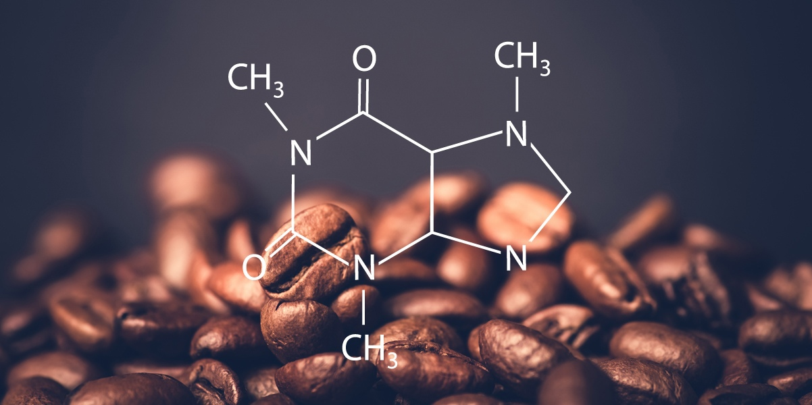
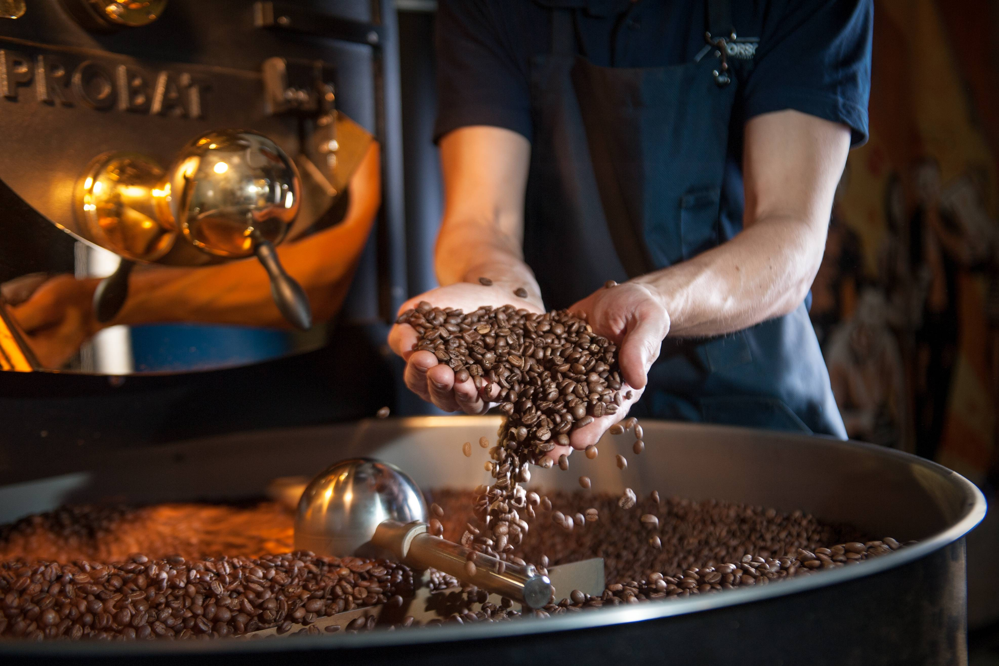
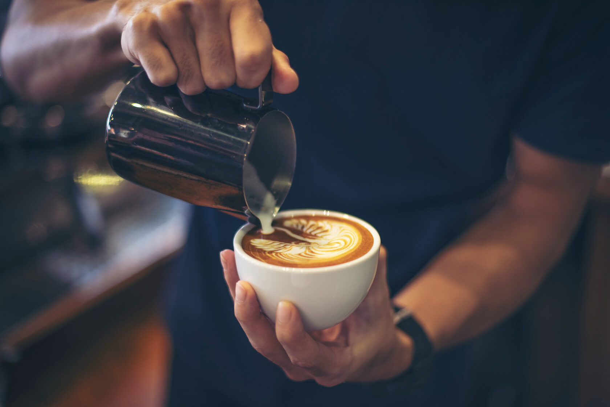

Кофе: Волшебное Зелье, Которое Пробуждает Мир

Кофе — это не просто напиток, это часть культуры, обряд, источник вдохновения и, конечно же, многогранная история.
Своим ароматом и вкусом он завораживает, а его влияние на общество и искусство невозможно переоценить.
История Кофе
История кофе берет свое начало в древних эфиопских легендах, где козоводы заметили,
что их животные становились более бодрыми после поедания красных ягод.
Этот открытый секрет был обнаружен человеком, и началась история кофейного зерна.
Затем кофе распространился в Аравийский полуостров и стал популярным напитком в странах Ближнего Востока.
Сначала кофе употреблялся исключительно в восточных странах, но в 17 веке он ворвался в Европу, завоевав сердца людей своим бодрящим воздействием.
Кофейни стали местом обмена новостями, идеями и культурными течениями.

Процесс Создания Кофе
Процесс создания кофе — это настоящее искусство.
Все начинается с кофейных зерен, которые собирают, сушат, обжаривают и молотят.
Каждый из этих этапов влияет на вкус и аромат будущего напитка.
Обжарка кофейных зерен — это магия, в результате которой появляются те неповторимые оттенки вкуса и аромата, которые мы любим.
От легкой обжарки с фруктовыми нотками до глубокой, темной обжарки с намеком на горькое шоколадное послевкусие — разнообразие кофейных вкусов
позволяет каждому найти свой идеальный напиток.

Культура Потребления Кофе
Кофе — это не просто жидкость, которую мы пьем, чтобы проснуться.
Это целый обряд, который сопровождается своими традициями. В разных странах существуют свои предпочтения по поводу способов приготовления,
добавок и времени употребления кофе.
В Италии, например, популярен эспрессо, в Турции — турецкий кофе с пряностями, а в Скандинавии часто предпочитают фильтрованный кофе.
Кроме того, кофейные заведения стали настоящим социальным явлением. Здесь люди встречаются, общаются, работают, проводят время в кругу друзей.
Кофейня — это не просто место, где можно выпить чашку кофе, но и площадка для обмена идеями и творчества.
Влияние на Здоровье и Энергию
Кофе содержит кофеин — вещество, которое стимулирует центральную нервную систему.
Умеренное употребление кофе может повысить бодрствование, улучшить настроение и даже улучшить когнитивные функции.
Однако важно не переусердствовать, чтобы избежать негативных последствий для здоровья.
Кофе — это не просто напиток, это часть нашей повседневной жизни и культуры.
Он обладает удивительной способностью объединять людей, вдохновлять и создавать уютную атмосферу.
Своим богатым вкусом и ароматом кофе напоминает нам, что в жизни есть много прекрасных моментов, которые можно наслаждаться в хорошей компании и с чашкой этого волшебного напитка в руках.
